Experiência Profissional
Desenvolvedor de Games Unity
e-Health Lab (Laboratório de Inovação em Saúde Digital da UFF)
Como membro do laboratório, atuei no desenvolvimento e design de jogos imersivos em Unity, com foco em realidade virtual para o Meta Quest 2. Participei da criação de experiências interativas, incluindo o jogo "Guardar Mar" (exibido no AquaRio) e "AstroRoll", projeto que resultou em uma publicação na prestigiosa ACM Digital Library.
Experiências Acadêmicas
Programa de Iniciação Científica (PICME)
UFF | 2023 - 2024
Bacharelado em Ciência da Computação
Universidade Federal Fluminense (UFF)
Programa de Iniciação Científica (PIC)
IFRJ | 2020 - 2022
Ensino Médio
IFRJ | 2019 - 2023
Prêmios
Olimpíada Brasileira de Matemática (OBMEP)
- Medalha de Prata: 2021
- Medalha de Bronze: 2019
Idiomas
Português
Nativo
Inglês
Compreensão e Leitura Avançada, Escrita e Fala Intermediária.
Projetos
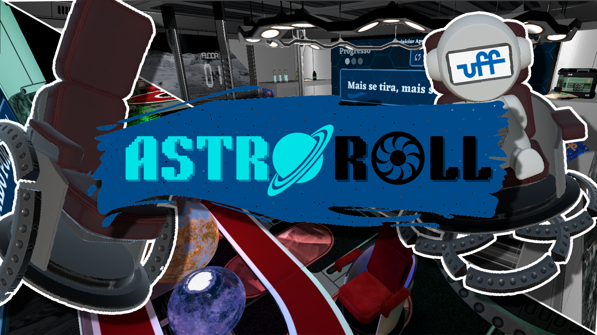
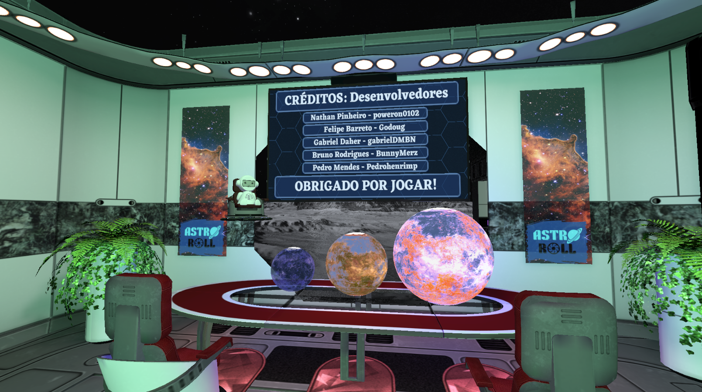
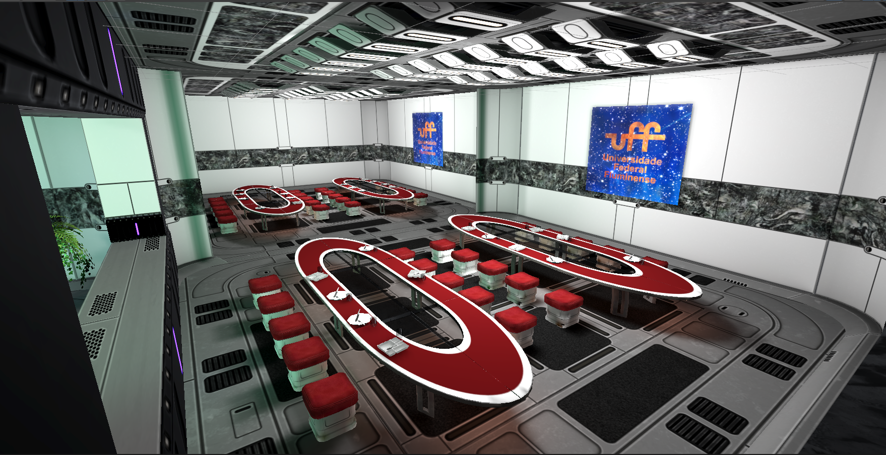
AstroRoll (Unity VR)
Jogo de Realidade Virtual desenvolvido em Unity para o Meta Quest 2, focado em interação e imersão. Este projeto foi publicado na ACM Digital Library.
Tecnologias Utilizadas:
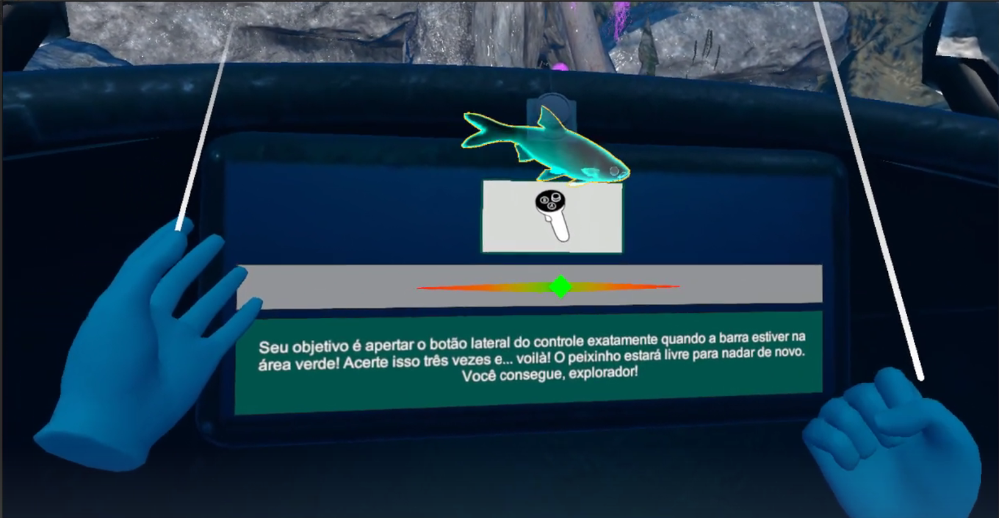

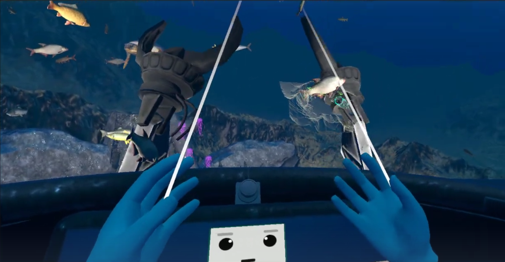
Guardar Mar (Unity VR)
Experiência interativa em Realidade Virtual sobre a vida marinha, desenvolvida para uma exposição no AquaRio, utilizando Unity.
Tecnologias Utilizadas:
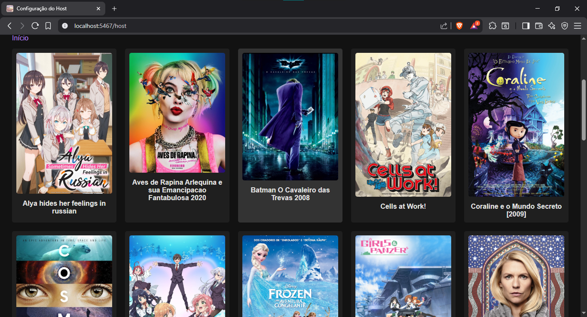
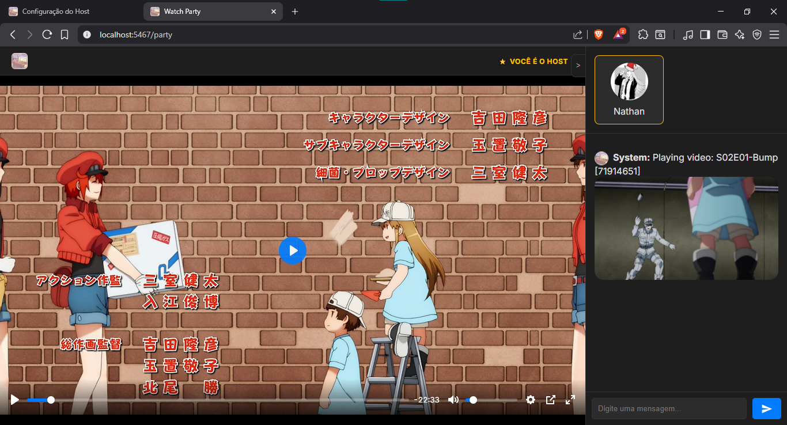
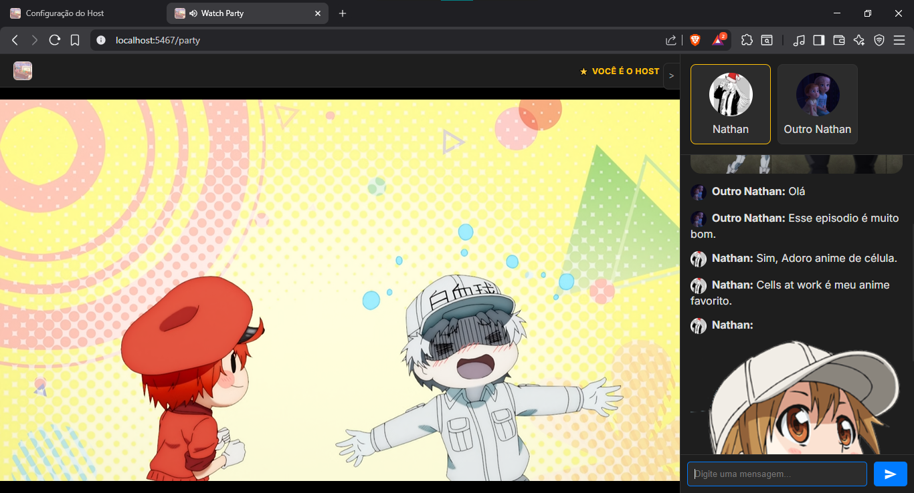
WatchParty
Aplicação em Python para assistir vídeos localmente com amigos, sincronizando os controles de play, pause e seek entre todos os participantes.
Tecnologias Utilizadas:
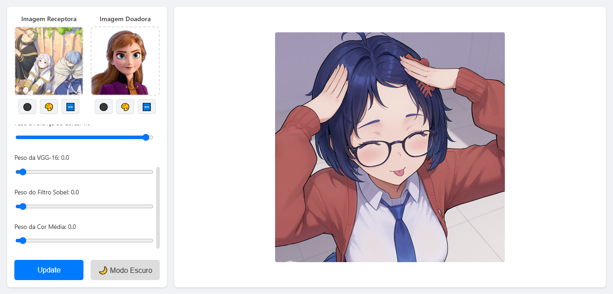
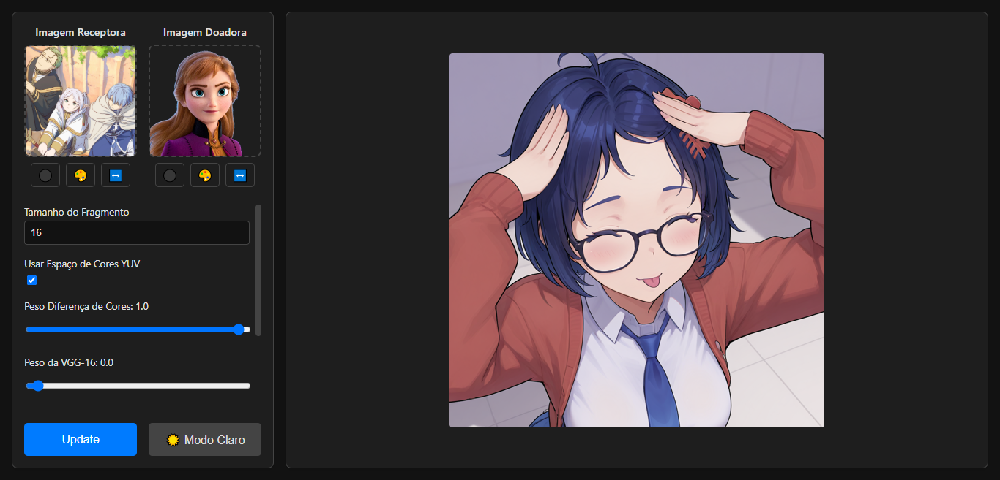
Fractais (Visão Computacional)
Trabalho realizado para a disciplina de Visão Computacional da UFF, focado na geração e exploração de fractais.
Tecnologias Utilizadas:
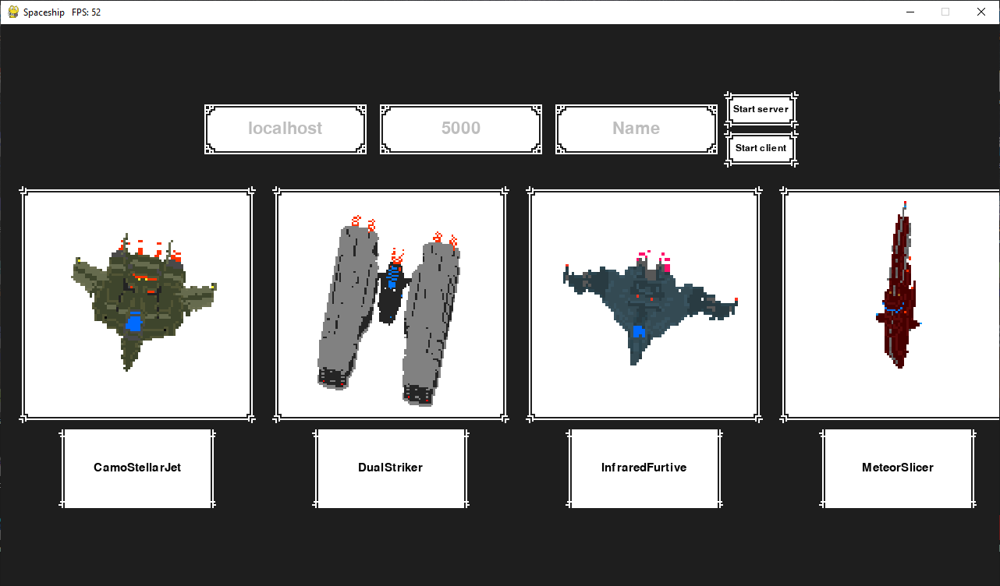
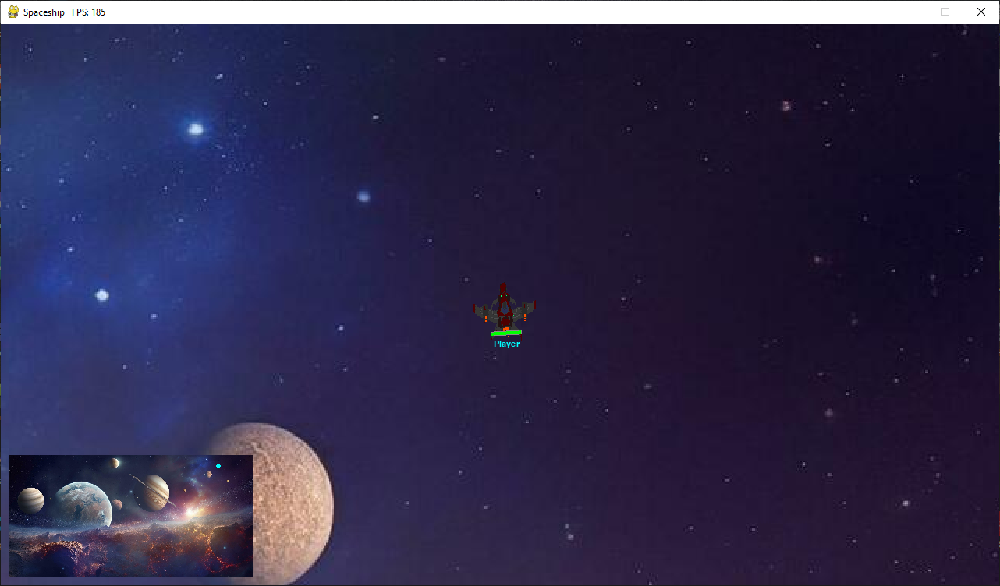
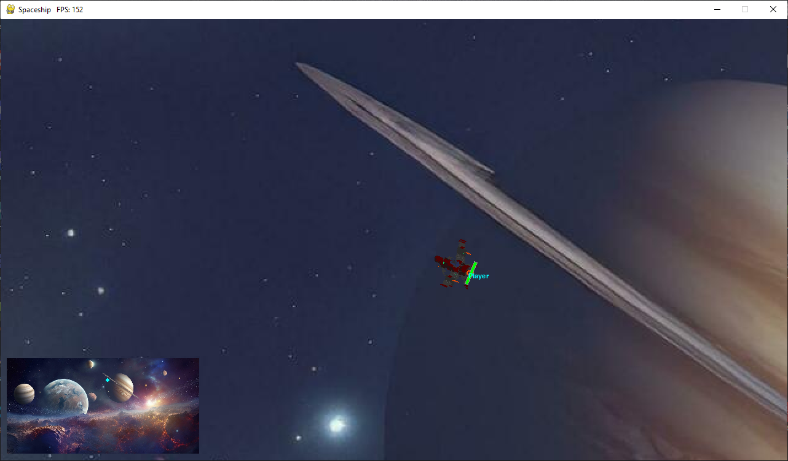
EasyCells
Um framework de desenvolvimento de jogos em Python inspirado na Unity, permitindo a criação de Items, Levels e Componentes para RPC e lógica de jogo.